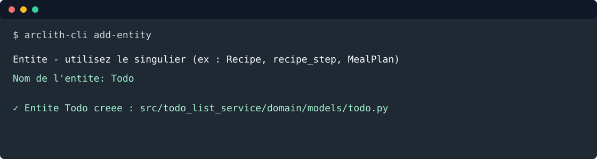

2. Créer l'entité Todo¶
Objectif: utiliser la CLI pour créer le fichier minimal, puis écrire le modèle métier.

Depuis la racine du projet:
arclith-cli add-entity
Répondre au prompt:
Entité — utilisez le singulier (ex : Recipe, recipe_step, MealPlan)
Nom de l'entité: Todo
La CLI crée:
src/todo_list_service/domain/models/todo.py
Remplacer le contenu par:
from __future__ import annotations
from datetime import date, datetime
from enum import StrEnum
from arclith.domain.models.entity import Entity
from pydantic import Field, field_validator, model_validator
class TodoStatus(StrEnum):
TODO = "todo"
WIP = "wip"
DONE = "done"
class Todo(Entity):
title: str = Field(min_length=1, max_length=140)
description: str = Field(default="", max_length=4000)
due_date: date
completed_at: datetime | None = None
status: TodoStatus = TodoStatus.TODO
@field_validator("title")
@classmethod
def normalize_title(cls, value: str) -> str:
normalized = value.strip()
if not normalized:
raise ValueError("title ne peut pas être vide")
return normalized
@field_validator("description")
@classmethod
def normalize_description(cls, value: str) -> str:
return value.strip()
@model_validator(mode="after")
def validate_completion(self) -> "Todo":
if self.status == TodoStatus.DONE and self.completed_at is None:
raise ValueError("completed_at est requis quand status=done")
if self.status != TodoStatus.DONE and self.completed_at is not None:
raise ValueError("completed_at doit rester vide tant que la todo n'est pas done")
return self
Commentaires importants:
Todohérite deEntity, donc Arclith fournit déjàuuid,created_at,updated_at,deleted_atetversion;TodoStatusest une enum de chaîne pour produire des valeurs JSON lisibles;- les invariants métier restent dans le domaine, pas dans FastAPI, MCP ou LangGraph.
Tester¶
Créer tests/test_todo_entity.py:
from datetime import date, datetime, timezone
import pytest
from pydantic import ValidationError
from todo_list_service.domain.models.todo import Todo, TodoStatus
def test_create_todo_with_required_fields() -> None:
todo = Todo(title=" Préparer la revue ", due_date=date(2026, 8, 31))
assert todo.title == "Préparer la revue"
assert todo.description == ""
assert todo.status == TodoStatus.TODO
assert todo.completed_at is None
def test_done_requires_completed_at() -> None:
with pytest.raises(ValidationError):
Todo(title="Publier", due_date=date(2026, 8, 31), status=TodoStatus.DONE)
def test_completed_at_is_rejected_before_done() -> None:
with pytest.raises(ValidationError):
Todo(
title="Publier",
due_date=date(2026, 8, 31),
completed_at=datetime.now(timezone.utc),
status=TodoStatus.WIP,
)
Lancer:
uv run python -m pytest tests/test_todo_entity.py
Voie rapide¶
arclith-cli add-entity Todo
Étape suivante: créer le use case.